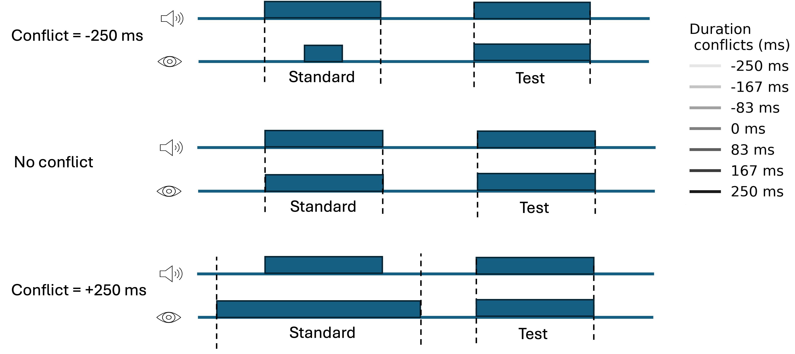

Question
Audiovisual duration cues integrate optimally under small conflicts (Hartcher-O'Brien et al., 2014). Does causal inference break that integration when AV conflicts grow large — the way it does in spatial localization (Körding et al., 2007)?
- Does the brain fuse, segregate, or switch between AV duration cues at large conflict?
- How does auditory reliability shape the visual bias on perceived auditory duration?
- Can behavioral fits actually discriminate these computational strategies?
Stimuli & Tasks
2-IFC · 500 ms standardUnimodal auditory & visual. Auditory: noise burst in continuous background (low- vs high-SNR). Visual: filled-disk interval against a persistent outline. Calibrates per-modality sensory noise.

Bimodal main task. Conflict applied only to the visual standard (7 levels: −250, −167, −83, 0, +83, +167, +250 ms). Auditory durations unchanged. Per-subject AV bias compensated. Judge: which interval was longer (auditory)?
Cue reliability
Log-normal psychometric fits show auditory reliability is the highest at low noise and the lowest at high noise; vision sits in between. Friedman χ²(2) = 18.73, p < .001.
A. Weber fractions per participant. B. Pooled psychometric fits.
JND ≈ 92 ms
JND ≈ 213 ms
JND ≈ 1272 ms
Modality bias
cross-modal calibrationBefore adding AV conflict we estimate each subject's perceptual auditory–visual bias from a cross-modal task and correct it on the visual stimulus, so the nominal 0-conflict trial is perceptually matched.
A. Per-subject PSE shifts. B. Pooled cross-modal fits. Auditory durations are systematically perceived as longer than matched visual.
Models
Main result · PSE shifts
Visual bias on perceived auditory duration grows approximately linearly with conflict and is much larger under high auditory noise. The non-linear breakdown predicted by causal inference is not observed.
Group mean PSE shifts (n = 11, ±SEM) vs AV conflict for A · low-noise and B · high-noise auditory. Lines: forced fusion (M1), causal model averaging (M2), and cue switching (M5) — all three converge.
Model comparison
ΔAIC · individual + groupFree σ (fit to bimodal): cue switching wins for 4/11 subjects.
cue switching
(Bayesian omnibus risk)
no model dominates
Conclusion
- Auditory duration is biased toward vision; bias scales with auditory noise.
- Bias grows linearly with conflict — no causal-inference breakdown observed.
- Heuristic cue switching fits marginally best, but model evidence is essentially flat.
- High encoding noise keeps P(C=1) high → fundamental identifiability limit for sub-second AV duration tasks.
- Causal inference may still be plausible; behavior alone cannot adjudicate within experimentally tolerable conflict ranges.